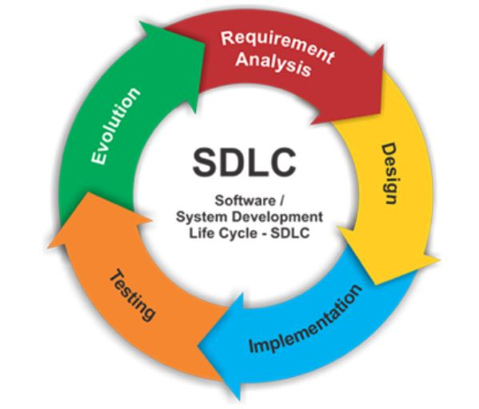

Module Overall Reflection

Introduction
In this reflective piece, I will use Gibbs' Reflective Cycle (1988) to structure my reflection on the Secure Software Development (SSD) module. Gibbs’ model is ideal for this purpose, as it facilitates a detailed examination of each stage of the learning process, from describing experiences to evaluating and planning future actions. This framework ensures that my reflection is both thorough and academically rigorous, enabling a comprehensive analysis of my experiences and the insights gained throughout the module.
Description
Description
In the study of secure software development, hands-on tasks and collaborative projects played a crucial role in enhancing both theoretical knowledge and practical skills. Assignment 1 was particularly instrumental, focusing on the design of cryptographic algorithms tailored for different stages of the Software Development Life Cycle (SDLC). This task demanded a deep dive into the Waterfall model, emphasizing the unique security requirements for each phase and how cryptographic measures could be effectively applied to address them. Through this assignment, a comprehensive understanding of how to integrate cryptographic techniques into various stages of software development was achieved.
In addition to individual assignments, collaborative discussions provided valuable insights and practical experience. Collaborative Discussion 1 involved creating a UML flowchart, which helped visualize the processes and interactions within a secure SDLC framework. Meanwhile, Collaborative Discussion 2 centered around a case study of TrueCrypt, which provided real-world context on the implementation and challenges of cryptographic solutions. These discussions not only reinforced theoretical concepts but also facilitated a deeper understanding of practical applications and the complexities involved in securing software development environment
Feelings
Initially, I felt overwhelmed by the technical demands and the critical need for accuracy in secure software development. The complexity of cryptographic algorithms and the meticulous attention required for setting up a secure development environment were particularly daunting. The pressure to ensure that every aspect of the system was secure and free from vulnerabilities added to my initial anxiety. The early stages of the module felt like a steep learning curve, where even a small mistake could lead to significant security breaches.
As I progressed through the assignments and weekly units, my confidence grew. Each unit built upon the previous one, gradually increasing my understanding and competence. The practical tasks, such as creating UML flowcharts and setting up secure environments, provided hands-on experience that reinforced the theoretical concepts. This iterative learning process helped to demystify the complexities of secure software development. The structured approach of the module, coupled with supportive feedback from instructors, played a crucial role in boosting my self-assurance.
The practical skills gained from creating UML flowcharts and experimenting with cryptographic libraries were particularly empowering. These activities not only enhanced my technical abilities but also demonstrated the tangible impact of secure development practices. Designing flowcharts helped me visualize the security processes and better communicate with my peers, fostering a collaborative learning environment. Experimenting with cryptographic libraries provided a deeper understanding of how encryption can protect sensitive data, making me more confident in my ability to implement secure solutions. This growing confidence and competence marked a significant shift from my initial feelings of being overwhelmed to a more empowered and capable mindset.
Evaluation
The assignments and weekly units provided comprehensive exposure to both theoretical and practical aspects of secure software development. This dual approach ensured a well-rounded understanding of the subject, blending foundational knowledge with hands-on experience. The structured progression of the module allowed for a gradual increase in complexity, enabling me to build confidence and competence at a manageable pace. This combination of theory and practice was essential in cementing my understanding and enabling me to apply what I learned to real-world scenarios.
Understanding Cryptographic Algorithms: Learning to design cryptographic solutions for specific stages of the Software Development Life Cycle (SDLC) was particularly invaluable. This aspect of the module underscored the importance of tailored security measures depending on the development phase. For instance, during the requirements phase, we focused on identifying security needs and potential threats, while in the implementation phase, the emphasis was on coding practices and encryption techniques. By understanding the distinct security requirements at each stage, I realized how crucial it is to integrate security practices throughout the entire SDLC rather than treating them as an afterthought. This knowledge is directly applicable to industry practices, where the failure to address security at any stage can lead to significant vulnerabilities and breaches.
Practical Skills in Setting Up Secure Environments: The practical tasks, such as setting up secure development environments, were crucial for translating theoretical knowledge into actionable skills. This hands-on experience was invaluable because it taught me how to configure and manage environments that adhere to security best practices. For example, during Assignment 2, we had to install necessary packages and create data files to ensure a secure setup. This task required meticulous attention to detail and a thorough understanding of security protocols and tools. By engaging in these practical exercises, I gained a deeper appreciation of the complexities involved in securing development environments. This practical knowledge is not only academically enriching but also directly applicable to real-world scenarios, where setting up a secure environment is fundamental to preventing security breaches and ensuring data integrity.
Collaborative Learning and Independent Work: The module's balance of independent tasks and group projects was instrumental in fostering both self-reliance and teamwork skills. Working independently on assignments allowed me to develop a b personal understanding of secure software development principles and practices. It also provided an opportunity to explore areas of particular interest in greater depth. On the other hand, group projects facilitated collaborative learning, where peer interactions and discussions enriched my understanding of the subject. Collaborative tasks, such as creating UML flowcharts and working on secure development projects, emphasized the importance of communication and teamwork in the field of software development. By engaging in these collaborative efforts, I learned how to effectively share ideas, provide and receive feedback, and integrate diverse perspectives into a cohesive solution. This balance of independent and collaborative work mirrored real-world professional environments, where teamwork and individual initiative are both critical for success.
The module's comprehensive approach, combining theoretical knowledge with practical application and balancing individual and group work, provided a holistic learning experience. It equipped me with the necessary skills and confidence to tackle secure software development challenges in a professional setting. The understanding of cryptographic algorithms, practical skills in setting up secure environments, and the ability to work both independently and collaboratively are all crucial competencies that I have developed through this module. These experiences have not only enhanced my technical abilities but also prepared me for the collaborative and multifaceted nature of real-world software development projects. Through this module, I have gained a deeper understanding of the importance of integrating security practices throughout the SDLC, the practical skills needed to implement these practices, and the interpersonal skills required to work effectively in a team.
Analysis
Reflecting on these experiences, I realize the critical role of continuous learning and adaptation in secure software development. The field of cybersecurity is dynamic, with new threats and vulnerabilities emerging regularly. This necessitates a commitment to ongoing education and skill development to stay ahead of potential risks. The module highlighted this need by ensuring that each unit built on the previous one, gradually increasing in complexity and depth. This iterative approach allowed me to revisit and refine my understanding continually. It reinforced the concept that secure software development is not a static process but an evolving practice that requires constant vigilance and updating of knowledge and skills.
The module's structure, which integrated theoretical knowledge with practical application, was particularly effective in fostering a deep and lasting understanding. The theoretical components provided a b foundation of essential concepts and principles, while the practical tasks offered opportunities to apply these theories in real-world scenarios. This blend of theory and practice ensured that I did not just learn about secure software development in an abstract sense but also understood how to implement these practices effectively. The iterative nature of the assignments further cemented this learning, as each task built on the last, allowing for continuous improvement and a deeper understanding of the material. This approach has equipped me with both the theoretical knowledge and practical skills necessary to navigate the complexities of secure software development and adapt to its ever-changing landscape.
Conclusion
The insights gained from this module are pivotal for my future career. The ability to design and implement secure software is a highly sought-after skill in the industry. Moreover, the reflective practice itself is a valuable tool for continuous professional development.
Action Plan
Moving forward, I plan to continue practicing secure development techniques by regularly engaging with new tools and methodologies to stay current with industry standards. This ongoing practice will ensure that I maintain a high level of competence and adaptability in the face of evolving security challenges. Additionally, I intend to collaborate more frequently, leveraging teamwork to tackle complex security issues and benefit from diverse perspectives. Working with others will not only enhance my problem-solving abilities but also foster a collaborative spirit that is essential in the professional world. Furthermore, I will engage in continuous learning by participating in workshops, webinars, and courses to keep my skills and knowledge up to date. This commitment to lifelong learning will help me stay informed about the latest developments in the field and ensure that I can effectively implement cutting-edge security practices in my work.
Reference
Gibbs, G. (1988) Learning by Doing: A guide to teaching and learning methods. Further Education Unit. Oxford: Oxford Polytechnic.